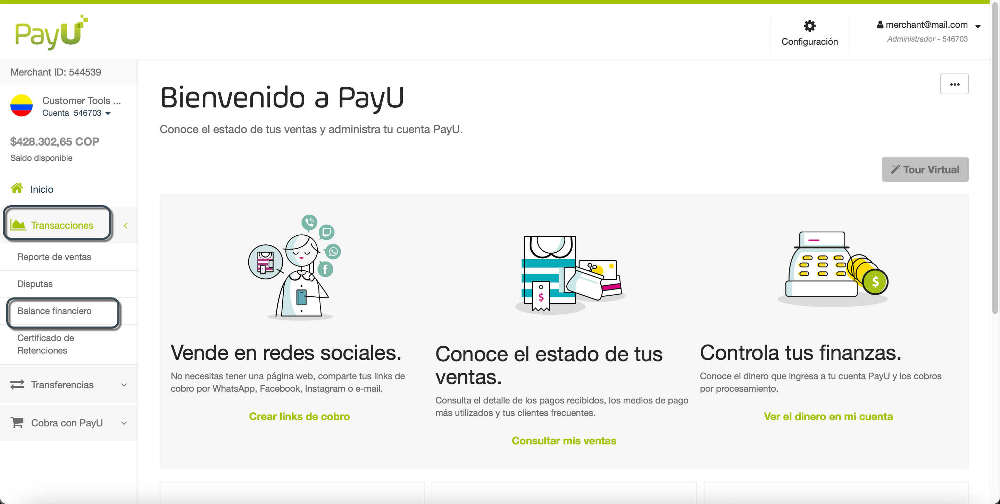
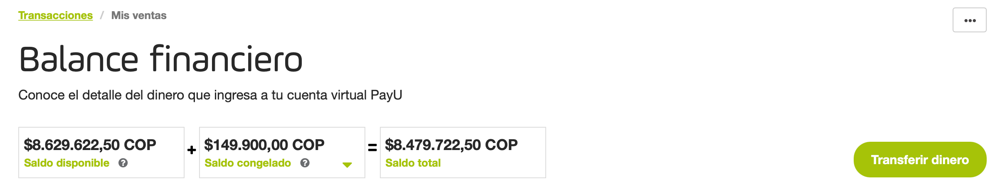
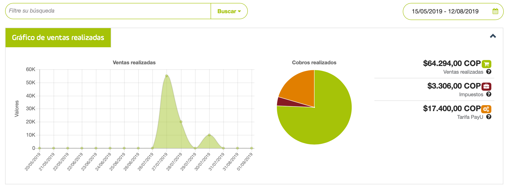
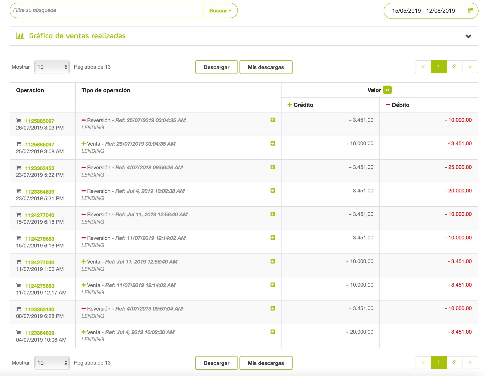
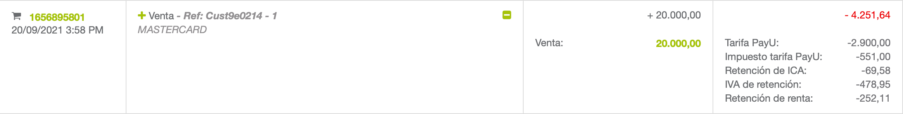
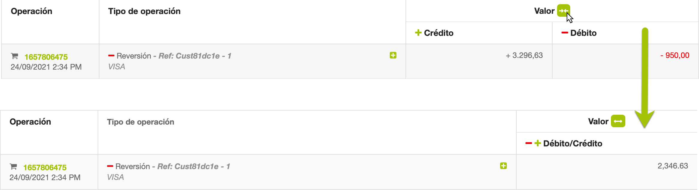
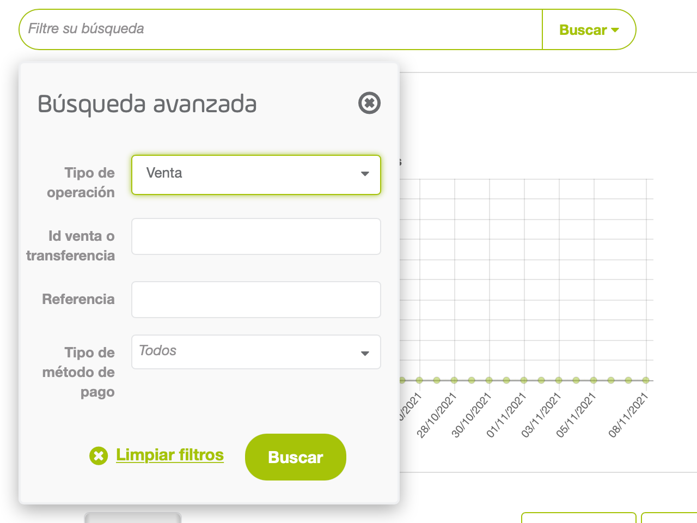
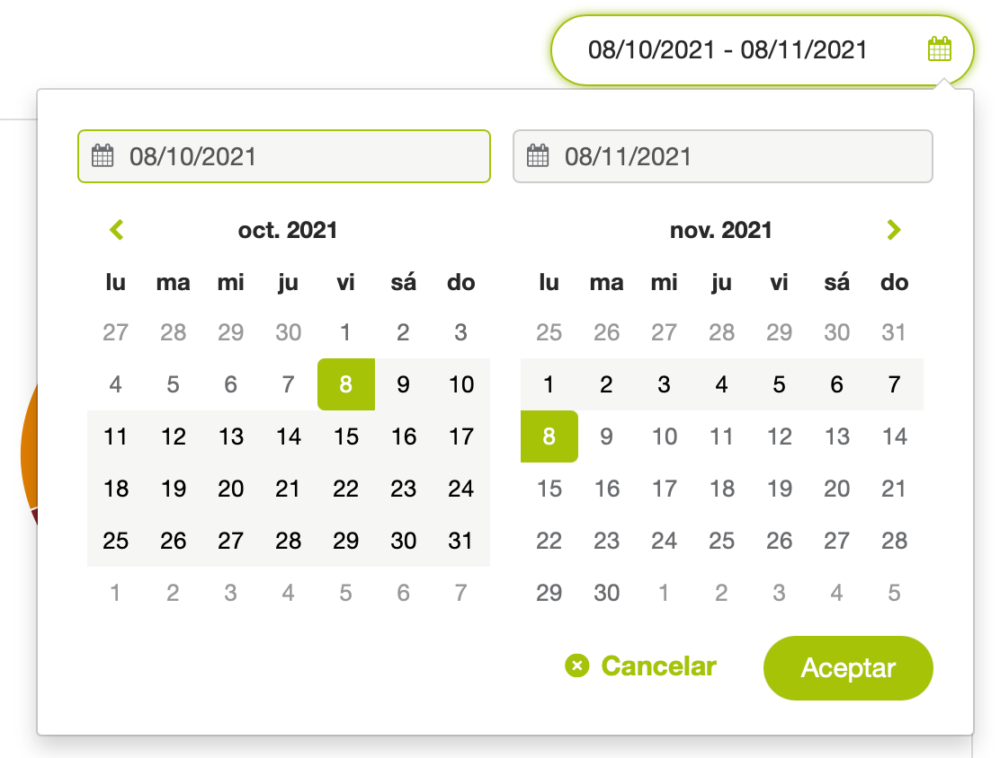
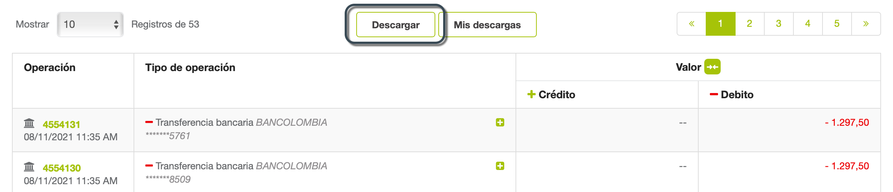
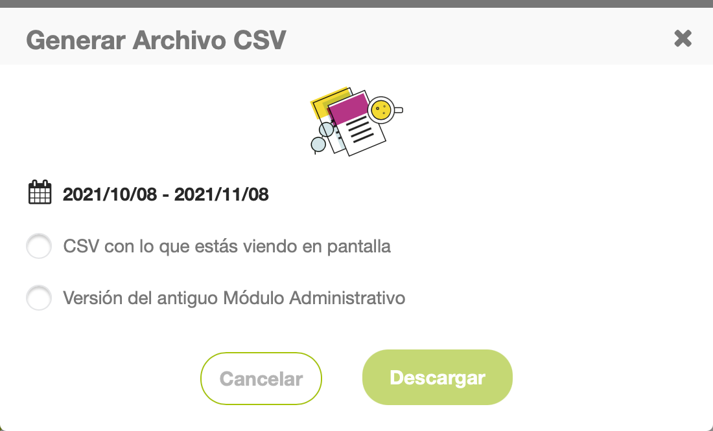

Balance financiero
Nota
Los reportes en el Módulo PayU están limitados a 20 mil filas para visualización y descarga. Si necesitas tener reportes personalizados o mostrar más información, comunícate con tu representante de ventas.¿Qué es el Balance financiero?
El Balance financiero te ayuda a identificar los movimientos (descuentos de comisiones, tarifas de transferencia, reversiones) de tu cuenta PayU. Este reporte muestra el resumen de la cuenta, con los débitos y abonos realizados durante el mes, y la información del saldo disponible.
Además, el Balance financiero ayuda al área contable a conciliar todas las operaciones comerciales de comercio electrónico.
Permisos requeridos
Para tener acceso a este módulo, necesitas un perfil con el permiso following permissions enabled
- Movimientos > Reporte de Balance
- Movimientos > Descargar reporte CSV
Este permiso debe estar habilitado para permitirle descargar el informe..
Consulta Perfiles y Permisos para más información.
Consultar el reporte
Ingresa a tu cuenta PayU. En el menú de la izquierda, expande el menú Transacciones y selecciona Balance financiero. De forma predeterminada, el reporte muestra la información de la operación * de los últimos 30 días desde la más reciente a la más antigua.
*Limitado a 20 mil registros.

La sección de Balance financiero está divida en tres partes:
Saldo General
La primera parte es el saldo general donde puedes ver los fondos en tu cuenta PayU y un botón que te permite solicitar una transferencia a tu cuenta bancaria.
El Saldo general se compone de:
- Saldo disponible: los fondos totales recibidos de tus ventas, luego de descontar la comisión de PayU.
- Saldo congelado: los fondos que hacen parte de una disputa en proceso o un reembolso no aprobado solicitado por tu cliente.
- Saldo total: el dinero que puedes transferir a tu cuenta. Consiste del Saldo disponible menos Saldo congelado.

Gráfico de ventas realizadas
En la segunda parte, puedes entender la distribución de costos (incluidos impuestos y costos relacionados con la transacción) y analizar los gráficos de ventas y circular que resumen toda esta información.
Los gráficos muestran la información disponible en el rango de fechas seleccionado.

El gráfico circular proporciona la siguiente información:
- Ventas realizadas: es el valor total de tus ventas antes de impuestos y tarifa PayU, son tus ingresos durante el período consultado.
- Impuestos: son los cargos adicionales generados según tu régimen fiscal. Si tu régimen tributario es diferente, comunícate con sac@payu.com.
- Tarifa PayU: es el costo de procesamiento de PayU, incluido el porcentaje de ventas más la tarifa fija aplicada a tu cuenta.
Tabla del reporte
En la última parte debajo de los gráficos, se encuentra una tabla con la información de crédito y débito de las últimas operaciones. Puedes ver el tipo de operación y el valor (crédito o débito) de cada fila.

El reporte tiene las siguientes columnas:
| Columna | Descripción |
|---|---|
| Operación | ID y fecha de la operación. |
| Tipo de operación | Información de la operación. Dependiendo de su tipo, la información que se muestra varía. Haz clic en  para expandir los valores detallados de la operación en las columnas Débito y Crédito. para expandir los valores detallados de la operación en las columnas Débito y Crédito. |
| Crédito | Monto acreditado a tu Cuenta. |
| Débito | Monto debitado de tu Cuenta. |
Nota
Haz clic en el ícono  junto al título Valor para unir las columnas débito y crédito; el valor resultado es débito menos el valor positivo de crédito.
junto al título Valor para unir las columnas débito y crédito; el valor resultado es débito menos el valor positivo de crédito.
Por ejemplo, si el valor de la columna débito es $3.296,63 y el valor de la columna crédito es $950,00, el valor de la columna resultante luego de unirlas es $2.346,63.

Filtrar el reporte
Puedes utilizar la barra de búsqueda sobre el gráfico o el calendario para establecer filtros. Puedes filtrar por Tipo de operación, Id de venta o transferencia, Referencia*, o Método de pago*.
* Estos filtros se muestran cuando el Tipo de operación seleccionado es Venta, Reversión o Contracargada.
Para establecer un filtro, haz clic en el campo Filtre su búsqueda sobre el gráfico de de ventas realizadas.

Configura los valores de los filtros y haz clic en Buscar. Una vez hayas hecho clic, la tabla de filtros muestra las ventas que cumplen con los criterios seleccionados
Junto con estos filtros, también puedes establecer un período de tiempo en el que el comprador realizó la compra utilizando el filtro de fechas en la esquina superior derecha.

El rango de fechas de este filtro es tres (3) meses antes de la fecha final. Si excedes este rango, el reporte muestra la información de tres (3) meses después de la fecha de inicio.
Para ver la información de una fecha específica, configúrala tanto para la fecha de inicio como para la fecha fin.
Descargar el reporte
Para descargar el reporte, haz clic en el botón Descargar ubicado en la parte superior o inferior de la tabla del reporte.

Aparece una ventana emergente donde puedes seleccionar las opciones para generar el reporte*.
Nota
* Si el formato del archivo no se ajusta a tus necesidades, comunícate con tu ejecutivo de ventas para conocer más sobre la opción de enviar archivos a través de SFTP y las plantillas que tenemos para este reporte..El reporte se descarga automáticamente en formato de Excel (.csv). El nombre del reporte utiliza los siguientes formatos
- Opción CSV con lo que estás viendo en pantalla: [FechaDescargaEnMilisegundos]_statement_report_[AccountId].csv
- Opción Versión del antiguo Módulo Administrativo: [AccountId]_[FechaDescarga]_transactions.csv*
* fecha de descarga en formato dd-mm-yy-hh-mm-ss
En el reporte descargado, puedes validar todos los créditos y débitos de tu cuenta y además, puedes conciliar las comisiones de PayU que aparecen en la factura recibida mensualmente.
 Las comisiones e impuestos de PayU aparecen en la factura
Las comisiones e impuestos de PayU aparecen en la factura
Para conciliar la información con el [reporte de ventas] (/es/payu-module-documentation/reports/sales-report.html), puedes usar la variable ReferenceCode que aparece entre paréntesis en la transacción.

En el reporte generado encontrarás los siguientes conceptos.
| Concepto | Descripción |
|---|---|
| SALES | Monto aprobado de la transacción. |
| POL_COMMISSION | Comisión PayU: Porcentaje fijo establecido para el comercio + valor fijo establecido. |
| IVA_POL_COMMISSION | Comisión de impuestos. |
| IVA_RETENTION | Retención de IVA.* |
| RENTA_RETENTION | Retención de Retefuente.* |
| ICA_RETENTION | Retención de ICA.* |
| RETENTION SALES | Reembolso de transacción. |
| RETENTION POL_COMMISSION | Reembolso de la Comisión de PayU. |
| RETENTION IVA_POL_COMMISSION | Reembolso del impuesto de la Comisión de PayU. |
| RETENTION IVA_RETENTION | Reembolso de la retención del IVA. |
| RETENTION RENTA_RETENTION | Reembolso de la retención de la Retefuente. |
| RETENTION ICA_RETENTION | Reembolso de la retención de ICA. |
| PAYMENT_ORDER | Transferencia del Saldo disponible a la cuenta bancaria registrada. |
| PAYMENT_ORDER_POL_COMMISSION | Costo de transferencia. |
| IVA_PAYMENT_ORDER_POL_COMMISSION | Impuesto de transferencia. |
| FREEZE_FUND | Saldo congelado (reembolsos o disputas). |
| UNFREEZE_FUND | Liberación de las cantidades congeladas. |
| CHARGEBACK | Contracargo o disputa perdida. |
| DISCRETIONARY | Movimiento discrecional o crédito adicional a la cuenta. |
* Aplica solo a transacciones con tarjeta de crédito.